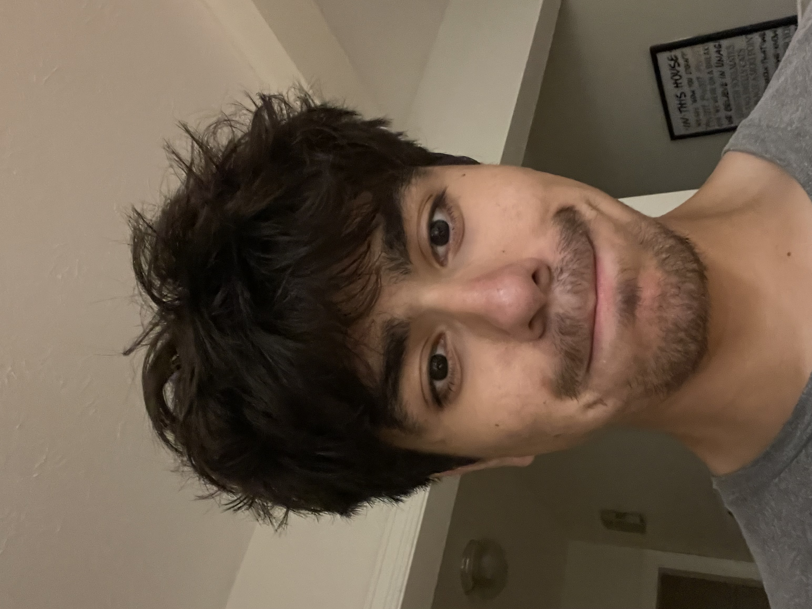

Welcome to My Personal Website!
My name is Ryan Mendoza. I'm 20 years old and live in Cincinnati, Ohio. I'm currently in the process of transferring to University of Cincinnati, where I'll studying Electrical Engineering. I spent the first year and a half of my college experience at Ohio State. I'm sort of a novice programmer, so I decided to make this website as a learning opportunity for myself (even though lots of folks would argue that web development isn't "programming" but who cares). Every day, I'm always trying to sharpen my skills and learn as much about the world as I can. In my spare time I enjoy distance running, reading, and playing guitar. I'm currently training for a marathon and trying to start a band. This site is never complete; I'm constantly nitpicking and will continue to update this over time. Here's a funny looking picture of me.